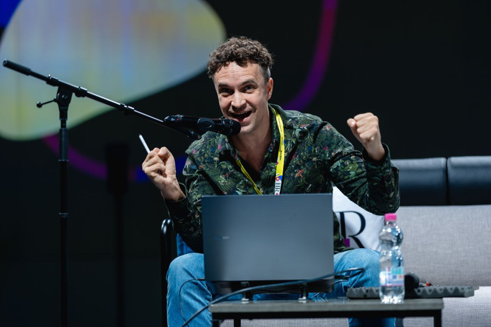

Кожен учасник отримає роль та набір задач, які потрібно виконувати у цій ролі. Наприклад: Астроцит створює силушки, які Свідомість буде використовувати на роботу, час із дітьми або бажання.
Загалом таких ролей буде 26.
Коли всі елементи системи починають працювати разом, відбувається магія.
Система у динаміці - це зовсім не те саме, що статична схема на рисунку. А динаміка, у якій ти особисто щось робиш, чіпляє набагато сильніше, ніж коли дивишся відео, навіть дуже якісне.
Раптом так виходить, що чіткі дії кожного перетворюються у великий хаос і треш. А потім із цього хаосу дивовижним чином народжується новий порядок, зовсім не очевидний з точки зору кожного індивідуального учасника. Так можна отримати якісно інше розуміння того, як працює вся система, і нові відповіді на власні, цілком практичні, запитання.
Деякі висновки дуже неочікувані та контрінтуїтивні, є ризик сильно змінити свій погляд на життя.
Найкраще виходить гра на 2 або 3 команди, тому що так кожен може і зіграти, і подивитися на всю систему зі сторони. Тому група буде 50-80 людей.
Вік учасників 16+
Гра триває 7 годин + перерва (будь ласка, розраховуйте, що може затягнутися).
Вартість 4900 грн.
Найближчі Вигорання:
• Онлайн, 05.09, 13:00 - 21:00
• Офлайн, Київ, 13.09, 11:00 - 19:00
• Офлайн, Львів, 02.10, 10:00 - 18:00
• Офлайн, Дніпро, 16.10, 09:00 - 17:00
Беремо сигнальні молекули (гормони та нейромедіатори): кортизол, дофамін, серотонін, ГАМК і жменю інших – і максимально людською мовою, як у моїх рілзах, розбираємо, як воно працює і як із цим жити. Стресостійкість, радість, тілесність, близькість, спокій, сміх і все таке.
Офлайн на одному із занять також зіграємо в Симулятор щастя. Онлайн поки що цю гру не роблю.
Курс на 3 заняття.
• Велика група офлайн, старт 03.10, 11:00 - 15:00, раз на тиждень, 2800 грн/заняття
• Велика група онлайн, старт 03.10, 18:00 - 21:00, раз на тиждень, 2100 грн/заняття
• Мала група, онлайн, старт 06.10, 18:00 - 21:00, раз на тиждень, 4200 грн/заняття
Як працює наша мотивація, що і чому ми робимо або не робимо?
Чому ми набираємо задачі, які не здатні виконати?
Чому стандартні методи мотивації не тільки не допомагають, а руйнують робочу атмосферу?
Чому сильна мотивація - це шлях до поганих рішень і вигорання?
Як мотивація впливає на креативність?
Зазвичай робота з мотивацією відбувається на рівні простих моделей типу "позитивна vs негативна" або "зовнішня vs внутрішня", а лінь розглядають як недостатність мотивації, коли треба просто додати інтенсивності.
Насправді ж система набагато складніша та цікавіша. Навіть на рівні біохімічних процесів ми вже отримаємо щонайменше 7 вимірів системи та можемо сформувати оптимальний профіль мотивації.
Курс на 3 заняття.
• Велика група офлайн, старт 31.10, 11:00 - 15:00, раз на тиждень, 2800 грн/заняття
• Велика група онлайн, старт 31.10, 18:00 - 21:00, раз на тиждень, 2100 грн/заняття
• Мала група, онлайн, старт 03.11, 18:00 - 21:00, раз на тиждень, 4200 грн/заняття
У ліні завжди є причина.
Якщо ми працюємо з проблемою без розуміння причин, це:
Наприклад: переважна більшість українців не займаються жодним навчанням після випуску зі школи та університету або погоджуються на це тільки з примусу. Чому? Тому що з навчанням у більшості погані асоціації: це нудно, постійне насильство, а результат або відсутній, або не вартий такої ціни.
Або: більшість українців не дотримуються здорового способу життя. Серед важливих причин: для нас шкідливе асоціюється зі свободою і насолодою, а корисне – то вимоги, необхідність, треба терпіти.
Розберемося, як це працює в людини:
Курс на 3 заняття.
• Велика група офлайн, старт 05.12, 11:00-15:00, раз на тиждень - 2800 грн/заняття
• Велика група онлайн, старт 05.12, 18:00-21:00, раз на тиждень - 2100 грн/заняття
• Мала група онлайн, старт 08.12, 18:00-21:00, раз на тиждень - 4200 грн/заняття
На що ми реагуємо емоцією: фактичні події, фантазії про майбутнє чи спогади з минулого?
Чи може емоція виникати без причини?
Що робити, коли вона вже є: контролювати чи відпускати?
Емоції залучають багато систем у мозку, а тому немає одного простого алгоритму роботи з ними. Треба врахувати потреби, контекст, переконання, попередній досвід, а також емоцію як окремий нейропсихічний процес.
Курс на 2 заняття.
• Велика група офлайн, старт 21.11, 11:00 - 15:00, раз на тиждень, 2800 грн/заняття
• Велика група онлайн, старт 21.11, 18:00 - 21:00, раз на тиждень, 2100 грн/заняття
• Мала група, онлайн, старт 24.11, 18:00 - 21:00, раз на тиждень, 4200 грн/заняття
Курс, який відкриває душу. Але не психотерапія. Теж максимум раціональності, системного мислення та біології, де це можливо. Від самооцінки залежить дуже багато, і вона ніяк не лягає у класичну розтяжку "висока-низька", там усе сильно хитріше.
Офлайн буде набір практичних вправ. Деякі з них онлайн теж доступні.
Курс на 2 заняття.
• Велика група офлайн, старт 19.09, 11:00 - 15:00, раз на тиждень, 2800 грн/заняття
• Велика група онлайн, старт 19.09, 18:00 - 21:00, раз на тиждень, 2100 грн/заняття
• Мала група, онлайн, старт 22.09, 18:00 - 21:00, раз на тиждень, 4200 грн/заняття
Буває так, що ми відчуваємо втому, але чашка кави або трохи мотивації — і відкривається друге або третє дихання. А буває, що відчуття втоми немає, але робота не робиться: неможливо зосередитися, купа помилок і можливо навіть хвороби. При цьому, коли треба спати, мозок аж гуде від думок і задач, а зранку від цієї енергії не лишається й сліду.
Оце от усе складемо докупи.
Курс на 2 заняття.
• Велика група офлайн, старт 16.01, 11:00-15:00, раз на тиждень - 2800 грн/заняття
• Велика група онлайн, старт 16.01, 18:00-21:00, раз на тиждень - 2100 грн/заняття
• Мала група онлайн, старт 19.01, 18:00-21:00, раз на тиждень - 4200 грн/заняття
На цьому курсі може статися все з будь-яких моїх курсів і все від мого колеги з kmbs і Змінотворців Тимура Демчука:
Все це – у форматі клубу. Для входу один стартовий дводенний модуль з необхідною понятійною базою з біології та системного мислення. А далі – 2-4 рази на рік виїзди по 3-4 дні з глибоким зануренням у теми, цікаві для учасників.
Головна цінність – спільнота: керівники (від СЕО -2 і вище) мають особливий погляд на світ і запити у навчанні.
Дводенний стартовий модуль,16800 грн:
Заняття 1. База: “Чому не існує?”.
Монстри чудові тим, що більшість з них можна досліджувати на відстані, якщо замінимо твердження “Їх не існує!” запитанням “Чому не існує?”. Для початку спробуємо на морських дівах (більш відомих під помилковою назвою “русалки”) та кентаврах.
Заняття 2. Кровопивці.
Важлива історія вампірів. Не важлива, але показова історія чупакабри.
Заняття 3. Чому дракони не динозаври?
Раціональність на службі псевдонауки. Кого убивав святий Юрій? Вовкулаки, циклопи, кентаври та інші істоти.
Заняття 4. Чому не існує драконів?
Чи можливі вогнедихаючі істоти? Чи можливі літаючі монстри? Оптимальне число голів. Чи можливі великі монстри?
Заняття 5. Вимерлі і воскреслі.
Чи збереглись доісторичні релікти? Яка на смак мамутятина? Чи можливо воскресити вимерлий вид?
Заняття 6. Тварини в міфах сучасних аборигенів Європи.
Що таке міф? Чому міфи будуть завжди? Чому біологічні міфи популярні? Особливості сучасних міфів (чому в дечому середньовічні бестіарії краще).
Наші уявлення про тварин (вони більше міфічні ніж наукові). Персонажі Вінні-Пуха як основа систематики міфічних тварин.
“Палеонтологія” як окреме джерело міфічних тварин.
Курс на 6 занять щотижня.
Хто хотів глибше у клітину, молекулярну біологію та генетику, еволюцію, імунітет і все що завгодно інше. Де зможемо, на простому рівні зачепимо і хімію з фізикою.
Уже запросив у співведучі:
Ну і я, Петро Чорноморець, кандидат біологічних наук.